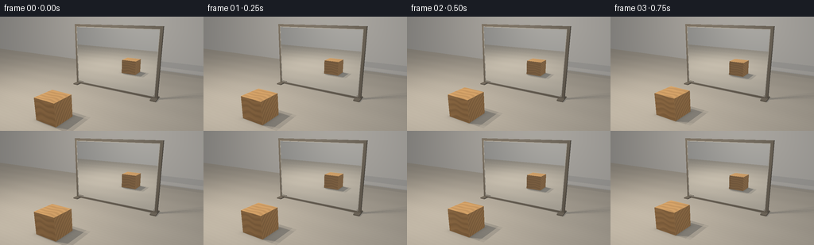
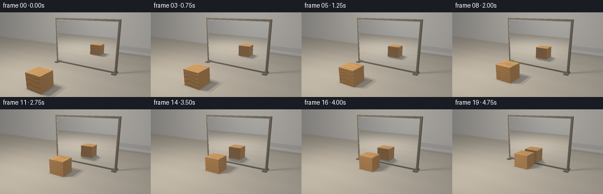

CODING AGENTS AS PIXEL WORLD MODELS
traex/GPT-6.1-Sol · phygen_061
点击播放 · 原生 RGB 像素
逐轮保存的候选
回放视频、检查图与代码变化。
每份候选均可单独播放。实际图片检查记录在下方工具轨迹中。
候选 01播放与检查图
点击播放 · 原生 RGB 像素


展开代码变化
--- 上一保存版本
+++ 本次保存版本
@@ -0,0 +1,209 @@
+"""Deterministic, analytic studio rendering of a sliding timber block and plane mirror.
+No external renderer or source imagery. All surfaces, lights, and textures are mathematical.
+"""
+from pathlib import Path
+import json
+import numpy as np
+from PIL import Image
+import artifact_io
+
+ROOT = Path(__file__).resolve().parent
+SPEC = json.loads((ROOT/'task_spec.json').read_text())
+W,H = SPEC['width'],SPEC['height']
+SS=3
+SW,SH=W*SS,H*SS
+DT=np.float32
+CAM=np.array([5.6,-8.3,4.7],DT)
+TARGET=np.array([0.,1.,1.5],DT)
+FW=TARGET-CAM; FW/=np.linalg.norm(FW)
+RT=np.cross(FW,np.array([0,0,1],DT)); RT/=np.linalg.norm(RT)
+UP=np.cross(RT,FW)
+yy,xx=np.mgrid[0:SH,0:SW].astype(DT)
+D=FW+(xx.ravel()[:,None]/SS+.5/SS-W/2)/245*RT-(yy.ravel()[:,None]/SS+.5/SS-H/2)/245*UP
+D/=np.linalg.norm(D,axis=1)[:,None]
+O=np.broadcast_to(CAM,D.shape)
+MIRROR_Y=2.365
+# id 1: tabletop; 2: background; 3: timber; 4: metallic frame; 5: bevel; 6: mirror
+RAILS=[]
+def rail(lo,hi,mat=4): RAILS.append((np.array(lo,DT),np.array(hi,DT),mat))
+rail([-2.95,2.37,.02],[-2.8,2.55,4.2])
+rail([2.8,2.37,.02],[2.95,2.55,4.2])
+rail([-2.8,2.37,.02],[2.8,2.55,.15])
+rail([-2.8,2.37,4.05],[2.8,2.55,4.2])
+# A narrow silver bevel gives the glass a crisp, tangible edge.
+rail([-2.8,2.355,.15],[-2.771,2.38,4.05],5)
+rail([2.771,2.355,.15],[2.8,2.38,4.05],5)
+rail([-2.771,2.355,.15],[2.771,2.38,.18],5)
+rail([-2.771,2.355,4.02],[2.771,2.38,4.05],5)
+rail([-2.98,2.00,.001],[-2.63,2.79,.075])
+rail([2.63,2.00,.001],[2.98,2.79,.075])
+
+KEYS=[np.array([-3.8+a,-3.2+b,7.5],DT) for a,b in [(-.7,-.6),(.7,-.6),(-.7,.6),(.7,.6)]]
+FILL=np.array([4.5,.1,6.5],DT)
+
+def box_hit(orig,dirs,low,high, normals=False):
+ inv=1/np.where(np.abs(dirs)<1e-9,1e-9,dirs)
+ a=(low-orig)*inv;b=(high-orig)*inv
+ near=np.minimum(a,b); far=np.maximum(a,b)
+ tn=np.max(near,axis=1); tf=np.min(far,axis=1)
+ t=np.where((tf>=np.maximum(tn,.0002))&(tn>.0002),tn,np.inf)
+ if not normals: return t
+ ax=np.argmax(near,axis=1)
+ n=np.zeros_like(dirs)
+ n[np.arange(len(dirs)),ax]=-np.sign(dirs[np.arange(len(dirs)),ax])
+ return t,n
+
+def trace(orig,dirs,bounds,mirror=True):
+ count=len(dirs)
+ ts=np.full(count,np.inf,DT); ids=np.zeros(count,np.int8); ns=np.zeros_like(dirs)
+ def commit(t,n,material):
+ sel=t<ts
+ ts[sel]=t[sel];ids[sel]=material
+ if n.ndim==1: ns[sel]=n
+ else: ns[sel]=n[sel]
+ # Quiet neutral work surface and studio walls.
+ t=-orig[:,2]/np.where(np.abs(dirs[:,2])<1e-8,1e-8,dirs[:,2])
+ commit(np.where(t>.0002,t,np.inf),np.array([0,0,1],DT),1)
+ for loc,normal in [(9.,[0,-1,0]),(-14.,[0,1,0])]:
+ t=(loc-orig[:,1])/np.where(np.abs(dirs[:,1])<1e-8,1e-8,dirs[:,1])
+ commit(np.where(t>.0002,t,np.inf),np.array(normal,DT),2)
+ for low,high,material in RAILS:
+ t,n=box_hit(orig,dirs,low,high,True);commit(t,n,material)
+ t,n=box_hit(orig,dirs,*bounds,True);commit(t,n,3)
+ if mirror:
+ t=(MIRROR_Y-orig[:,1])/np.where(np.abs(dirs[:,1])<1e-8,1e-8,dirs[:,1])
+ p=orig+dirs*t[:,None]
+ valid=(t>.0002)&(np.abs(p[:,0])<2.8)&(p[:,2]>.15)&(p[:,2]<4.05)&(dirs[:,1]>0)
+ commit(np.where(valid,t,np.inf),np.array([0,-1,0],DT),6)
+ return ts,ids,ns
+
+def timber(p,n):
+ # Grain runs along the x axis. End grain on x-facing cut faces follows growth rings.
+ x,y,z=p.T
+ rad=np.sqrt((y+.24)**2+(z+1.10)**2)
+ ringcoord=rad+.025*np.sin(4*x+3*z)+.018*np.sin(8*x-2*y)
+ phase=ringcoord*37
+ rings=np.sin(phase)+.26*np.sin(phase*2.07)+.1*np.sin(phase*5)
+ narrow=np.exp(-(np.sin(phase*.5)**2)/.025)
+ fibres=np.sin(180*rad+1.5*np.sin(2.5*x))*np.sin(10*x+3*z)
+ grain=.055*rings-.046*narrow+.011*fibres
+ end=np.abs(n[:,0])>.5
+ endphase=np.sqrt((y+.24)**2+(z+1.1)**2)*38
+ grain=np.where(end,.068*np.sin(endphase)-.05*np.exp(-np.sin(endphase*.5)**2/.045)+.012*np.sin(y*165+z*90),grain)
+ # Small pores and natural variation; no animated texture swimming.
+ pore=np.sin(x*111+y*247+z*84)*np.sin(x*55-y*130+z*178)
+ grain+=.008*pore+.012*np.sin(x*2.7+y*3.1+z*1.2)
+ base=np.array([.55,.285,.106],DT)
+ color=base[None,:]*(1+grain[:,None]*2.0)
+ # Thin softened arrises catch light instead of the implausible razor edges of CGI cubes.
+ local=p-BOX_LO
+ distances=np.minimum(local,BOX_HI-p)
+ distances=np.where(np.abs(n)>.5,10,distances)
+ edge=np.min(distances,axis=1)
+ color+=np.exp(-np.maximum(edge,0)/.018)[:,None]*np.array([.04,.025,.009],DT)
+ return np.clip(color,.01,.95)
+
+def surface(p,n,ids):
+ color=np.zeros_like(p)
+ a=ids==1
+ x,y,z=p[a].T
+ # Pale desaturated ash tabletop, contrasting with the golden solid wood block.
+ fine=.010*np.sin(y*31+.6*np.sin(x*1.1))+.003*np.sin(y*146+np.sin(x*2.4))
+ broad=.014*np.sin(y*3.1+.3*np.sin(x*.7))
+ c=np.array([.48,.435,.365],DT)[None,:]*(1+fine[:,None]+broad[:,None])
+ color[a]=c
+ a=ids==2
+ color[a]=np.array([.52,.505,.477],DT)
+ a=ids==3
+ color[a]=timber(p[a],n[a])
+ a=ids==4
+ color[a]=np.array([.17,.145,.112],DT)*(1+.025*np.sin(p[a,2:3]*255+p[a,0:1]*133))
+ a=ids==5
+ color[a]=np.array([.49,.46,.40],DT)
+ return color
+
+def visibility(p,l,bounds,frame_shadow=False):
+ vec=l-p;dist=np.linalg.norm(vec,axis=1);r=vec/dist[:,None]
+ hit=box_hit(p,r,*bounds)
+ blocked=hit<dist
+ if frame_shadow:
+ # the major frame rails and feet also contact and shadow the tabletop
+ for lo,hi,_ in RAILS[:4]+RAILS[8:]:
+ blocked|=box_hit(p,r,lo,hi)<dist
+ return (~blocked).astype(DT),r,dist
+
+def shade(orig,dirs,t,ids,n,bounds):
+ p=orig+dirs*t[:,None]
+ base=surface(p,n,ids)
+ ps=p+n*.001
+ # Modest broad ambient fill and direct softbox illumination.
+ ambient=.33+.07*np.clip(n[:,2],0,1)
+ ambient+=(ids==2)*.04
+ lit=base*ambient[:,None]
+ for li,l in enumerate(KEYS):
+ vis,L,dist=visibility(ps,l,bounds,frame_shadow=True)
+ lam=np.maximum(np.sum(n*L,axis=1),0)
+ strength=(85/(dist*dist+25))*vis*lam/len(KEYS)
+ lit+=base*strength[:,None]*np.array([1.0,.925,.82],DT)
+ # satin wood, fine brushed-metal edge highlights
+ half=L-dirs;half/=np.maximum(np.linalg.norm(half,axis=1)[:,None],1e-6)
+ nh=np.maximum(np.sum(n*half,axis=1),0)
+ metal=(ids==4)|(ids==5)
+ spec=np.where(metal,.52*nh**60,.027*nh**38)
+ lit+=(spec*vis/len(KEYS))[:,None]*np.array([1,.95,.87],DT)
+ L=FILL-p;dist=np.linalg.norm(L,axis=1);L/=dist[:,None]
+ lam=np.maximum(np.sum(n*L,axis=1),0)
+ lit+=base*(.17*lam)[:,None]*np.array([.84,.91,1.0],DT)
+ # Soft tight ambient contact at the box footprint, independent of direct-light direction.
+ floor=ids==1
+ if np.any(floor):
+ q=p[floor]
+ dx=np.maximum(np.maximum(BOX_LO[0]-q[:,0],q[:,0]-BOX_HI[0]),0)
+ dy=np.maximum(np.maximum(BOX_LO[1]-q[:,1],q[:,1]-BOX_HI[1]),0)
+ d=np.sqrt(dx*dx+dy*dy)
+ ao=1-.29*np.exp(-d/.10)
+ # Additional tight grounding of the mirror base.
+ frameao=1-.13*np.exp(-np.abs(q[:,1]-2.4)/.075)*(np.abs(q[:,0])<2.96)
+ lit[floor]*=(ao*frameao)[:,None]
+ return np.clip(lit,0,2)
+
+
+def render(f):
+ global BOX_LO,BOX_HI
+ # The block translates without rotation, maintaining an exact plane-reflected trajectory.
+ u=f/(SPEC['frames']-1)
+ cy=-2.3+3.83*u
+ BOX_LO=np.array([-1.275,cy-.575,.003],DT)
+ BOX_HI=np.array([-.025,cy+.575,1.153],DT)
+ bounds=(BOX_LO,BOX_HI)
+ t,ids,n=trace(O,D,bounds)
+ out=np.zeros_like(D)
+ real=ids!=6
+ out[real]=shade(O[real],D[real],t[real],ids[real],n[real],bounds)
+ mir=ids==6
+ if np.any(mir):
+ mp=O[mir]+D[mir]*t[mir,None]
+ rd=D[mir].copy();rd[:,1]*=-1
+ ro=mp+rd*.001
+ tr,ir,nr=trace(ro,rd,bounds,mirror=False)
+ rc=shade(ro,rd,tr,ir,nr,bounds)
+ # High-quality silvered glass: reflection is only very slightly cooler/dimmer.
+ rc*=np.array([.935,.957,.974],DT)
+ rc+=np.array([.003,.005,.007],DT)
+ out[mir]=rc
+ # Photographic contrast and gentle lens falloff, without camera movement.
+ out=out/(1+.30*out)
+ out=np.clip(out,0,1)**(1/2.2)
+ radial=((xx.ravel()/SW-.5)**2+(yy.ravel()/SH-.5)**2)
+ out*= (1-.12*radial)[:,None]
+ image=np.clip(out.reshape(SH,SW,3)*255+.5,0,255).astype(np.uint8)
+ return np.asarray(Image.fromarray(image).resize((W,H),Image.Resampling.LANCZOS))
+
+if __name__=='__main__':
+ frames=[]
+ for f in range(SPEC['frames']):
+ frames.append(render(f))
+ print(f'Rendered {f+1}/{SPEC["frames"]}',flush=True)
+ frames=np.stack(frames)
+ artifact_io.save(frames,ROOT)
+ print('Saved RGB video:',frames.shape,frames.dtype,flush=True)
候选 02播放与检查图
点击播放 · 原生 RGB 像素

展开代码变化
--- 上一保存版本
+++ 本次保存版本
@@ -80,6 +80,8 @@
def timber(p,n):
# Grain runs along the x axis. End grain on x-facing cut faces follows growth rings.
x,y,z=p.T
+ # Texture coordinates belong to the solid, so the growth rings travel with it.
+ y=y-(BOX_LO[1]+BOX_HI[1])*.5
rad=np.sqrt((y+.24)**2+(z+1.10)**2)
ringcoord=rad+.025*np.sin(4*x+3*z)+.018*np.sin(8*x-2*y)
phase=ringcoord*37
候选 03播放与检查图
可观测工具轨迹
实际执行的命令与返回图片。
命令 1exit 0
/bin/bash -lc "ls -la && cat prompt.txt && printf '\\n---RULES---\\n' && cat GENERATION_RULES.md && printf '\\n---SPEC---\\n' && cat task_spec.json"
命令 2exit 0
/bin/bash -lc "cat artifact_io.py && python - <<'PY' import importlib.util for x in ['numpy','PIL','scipy']: print(x, bool(importlib.util.find_spec(x))) PY"
命令 3exit 0
/bin/bash -lc "python - <<'PY' import numpy as np C=np.array([5.,-8.,4.7]); T=np.array([0.,1.25,1.25]); F=T-C; F/=np.linalg.norm(F); R=np.cross(F,[0,0,1]);R/=np.linalg.norm(R); U=np.cross(R,F) def p(a): d=np.array(a)-C return (128+190*np.dot(d,R)/np.dot(d,F),72-190*np.dot(d,U)/np.dot(d,F)) for a in [(-2.8,2.4,0),(-2.8,2.4,3.5),(2.8,2.4,0),(2.8,2.4,3.5),(-.7,-1.8,.5),(-.7,6.6,.5),(-.7,1.4,.5),(-.7,3.4,.5)]:print(a,p(a)) PY"
命令 4exit 0
/bin/bash -lc "python - <<'PY' import numpy as np C=np.array([5.6,-8.3,4.7]);T=np.array([0.,1.,1.5]);F=T-C;F/=np.linalg.norm(F);R=np.cross(F,[0,0,1]);R/=np.linalg.norm(R);U=np.cross(R,F) for a in [(-2.8,2.4,0),(-2.8,2.4,4.08),(2.8,2.4,0),(2.8,2.4,4.08),(-.65,-2.3,.6),(-.65,7.1,.6),(-.65,1.55,.6),(-.65,3.25,.6)]: d=np.array(a)-C;print(a,np.round([128+245*d@R/(d@F),72-245*d@U/(d@F)],1)) PY"
命令 5exit 0
/bin/bash -lc "cat > generate.py <<'PY'
\"\"\"Deterministic, analytic studio rendering of a sliding timber block and plane mirror.
No external renderer or source imagery. All surfaces, lights, and textures are mathematical.
\"\"\"
from pathlib import Path
import json
import numpy as np
from PIL import Image
import artifact_io
ROOT = Path(__file__).resolve().parent
SPEC = json.loads((ROOT/'task_spec.json').read_text())
W,H = SPEC['width'],SPEC['height']
SS=3
SW,SH=W*SS,H*SS
DT=np.float32
CAM=np.array([5.6,-8.3,4.7],DT)
TARGET=np.array([0.,1.,1.5],DT)
FW=TARGET-CAM; FW/=np.linalg.norm(FW)
RT=np.cross(FW,np.array([0,0,1],DT)); RT/=np.linalg.norm(RT)
UP=np.cross(RT,FW)
yy,xx=np.mgrid[0:SH,0:SW].astype(DT)
D=FW+(xx.ravel()[:,None]/SS+.5/SS-W/2)/245*RT-(yy.ravel()[:,None]/SS+.5/SS-H/2)/245*UP
D/=np.linalg.norm(D,axis=1)[:,None]
O=np.broadcast_to(CAM,D.shape)
MIRROR_Y=2.365
# id 1: tabletop; 2: background; 3: timber; 4: metallic frame; 5: bevel; 6: mirror
RAILS=[]
def rail(lo,hi,mat=4): RAILS.append((np.array(lo,DT),np.array(hi,DT),mat))
rail([-2.95,2.37,.02],[-2.8,2.55,4.2])
rail([2.8,2.37,.02],[2.95,2.55,4.2])
rail([-2.8,2.37,.02],[2.8,2.55,.15])
rail([-2.8,2.37,4.05],[2.8,2.55,4.2])
# A narrow silver bevel gives the glass a crisp, tangible edge.
rail([-2.8,2.355,.15],[-2.771,2.38,4.05],5)
rail([2.771,2.355,.15],[2.8,2.38,4.05],5)
rail([-2.771,2.355,.15],[2.771,2.38,.18],5)
rail([-2.771,2.355,4.02],[2.771,2.38,4.05],5)
rail([-2.98,2.00,.001],[-2.63,2.79,.075])
rail([2.63,2.00,.001],[2.98,2.79,.075])
KEYS=[np.array([-3.8+a,-3.2+b,7.5],DT) for a,b in [(-.7,-.6),(.7,-.6),(-.7,.6),(.7,.6)]]
FILL=np.array([4.5,.1,6.5],DT)
def box_hit(orig,dirs,low,high, normals=False):
inv=1/np.where(np.abs(dirs)<1e-9,1e-9,dirs)
a=(low-orig)*inv;b=(high-orig)*inv
near=np.minimum(a,b); far=np.maximum(a,b)
tn=np.max(near,axis=1); tf=np.min(far,axis=1)
t=np.where((tf>=np.maximum(tn,.0002))&(tn>.0002),tn,np.inf)
if not normals: return t
ax=np.argmax(near,axis=1)
n=np.zeros_like(dirs)
n[np.arange(len(dirs)),ax]=-np.sign(dirs[np.arange(len(dirs)),ax])
return t,n
def trace(orig,dirs,bounds,mirror=True):
count=len(dirs)
ts=np.full(count,np.inf,DT); ids=np.zeros(count,np.int8); ns=np.zeros_like(dirs)
def commit(t,n,material):
sel=t<ts
ts[sel]=t[sel];ids[sel]=material
if n.ndim==1: ns[sel]=n
else: ns[sel]=n[sel]
# Quiet neutral work surface and studio walls.
t=-orig[:,2]/np.where(np.abs(dirs[:,2])<1e-8,1e-8,dirs[:,2])
commit(np.where(t>.0002,t,np.inf),np.array([0,0,1],DT),1)
for loc,normal in [(9.,[0,-1,0]),(-14.,[0,1,0])]:
t=(loc-orig[:,1])/np.where(np.abs(dirs[:,1])<1e-8,1e-8,dirs[:,1])
commit(np.where(t>.0002,t,np.inf),np.array(normal,DT),2)
for low,high,material in RAILS:
t,n=box_hit(orig,dirs,low,high,True);commit(t,n,material)
t,n=box_hit(orig,dirs,*bounds,True);commit(t,n,3)
if mirror:
t=(MIRROR_Y-orig[:,1])/np.where(np.abs(dirs[:,1])<1e-8,1e-8,dirs[:,1])
p=orig+dirs*t[:,None]
valid=(t>.0002)&(np.abs(p[:,0])<2.8)&(p[:,2]>.15)&(p[:,2]<4.05)&(dirs[:,1]>0)
commit(np.where(valid,t,np.inf),np.array([0,-1,0],DT),6)
return ts,ids,ns
def timber(p,n):
# Grain runs along the x axis. End grain on x-facing cut faces follows growth rings.
x,y,z=p.T
rad=np.sqrt((y+.24)**2+(z+1.10)**2)
ringcoord=rad+.025*np.sin(4*x+3*z)+.018*np.sin(8*x-2*y)
phase=ringcoord*37
rings=np.sin(phase)+.26*np.sin(phase*2.07)+.1*np.sin(phase*5)
narrow=np.exp(-(np.sin(phase*.5)**2)/.025)
fibres=np.sin(180*rad+1.5*np.sin(2.5*x))*np.sin(10*x+3*z)
grain=.055*rings-.046*narrow+.011*fibres
end=np.abs(n[:,0])>.5
endphase=np.sqrt((y+.24)**2+(z+1.1)**2)*38
grain=np.where(end,.068*np.sin(endphase)-.05*np.exp(-np.sin(endphase*.5)**2/.045)+.012*np.sin(y*165+z*90),grain)
# Small pores and natural variation; no animated texture swimming.
pore=np.sin(x*111+y*247+z*84)*np.sin(x*55-y*130+z*178)
grain+=.008*pore+.012*np.sin(x*2.7+y*3.1+z*1.2)
base=np.array([.55,.285,.106],DT)
color=base[None,:]*(1+grain[:,None]*2.0)
# Thin softened arrises catch light instead of the implausible razor edges of CGI cubes.
local=p-BOX_LO
distances=np.minimum(local,BOX_HI-p)
distances=np.where(np.abs(n)>.5,10,distances)
edge=np.min(distances,axis=1)
color+=np.exp(-np.maximum(edge,0)/.018)[:,None]*np.array([.04,.025,.009],DT)
return np.clip(color,.01,.95)
def surface(p,n,ids):
color=np.zeros_like(p)
a=ids==1
x,y,z=p[a].T
# Pale desaturated ash tabletop, contrasting with the golden solid wood block.
fine=.010*np.sin(y*31+.6*np.sin(x*1.1))+.003*np.sin(y*146+np.sin(x*2.4))
broad=.014*np.sin(y*3.1+.3*np.sin(x*.7))
c=np.array([.48,.435,.365],DT)[None,:]*(1+fine[:,None]+broad[:,None])
color[a]=c
a=ids==2
color[a]=np.array([.52,.505,.477],DT)
a=ids==3
color[a]=timber(p[a],n[a])
a=ids==4
color[a]=np.array([.17,.145,.112],DT)*(1+.025*np.sin(p[a,2:3]*255+p[a,0:1]*133))
a=ids==5
color[a]=np.array([.49,.46,.40],DT)
return color
def visibility(p,l,bounds,frame_shadow=False):
vec=l-p;dist=np.linalg.norm(vec,axis=1);r=vec/dist[:,None]
hit=box_hit(p,r,*bounds)
blocked=hit<dist
if frame_shadow:
# the major frame rails and feet also contact and shadow the tabletop
for lo,hi,_ in RAILS[:4]+RAILS[8:]:
blocked|=box_hit(p,r,lo,hi)<dist
return (~blocked).astype(DT),r,dist
def shade(orig,dirs,t,ids,n,bounds):
p=orig+dirs*t[:,None]
base=surface(p,n,ids)
ps=p+n*.001
# Modest broad ambient fill and direct softbox illumination.
ambient=.33+.07*np.clip(n[:,2],0,1)
ambient+=(ids==2)*.04
lit=base*ambient[:,None]
for li,l in enumerate(KEYS):
vis,L,dist=visibility(ps,l,bounds,frame_shadow=True)
lam=np.maximum(np.sum(n*L,axis=1),0)
strength=(85/(dist*dist+25))*vis*lam/len(KEYS)
lit+=base*strength[:,None]*np.array([1.0,.925,.82],DT)
# satin wood, fine brushed-metal edge highlights
half=L-dirs;half/=np.maximum(np.linalg.norm(half,axis=1)[:,None],1e-6)
nh=np.maximum(np.sum(n*half,axis=1),0)
metal=(ids==4)|(ids==5)
spec=np.where(metal,.52*nh**60,.027*nh**38)
lit+=(spec*vis/len(KEYS))[:,None]*np.array([1,.95,.87],DT)
L=FILL-p;dist=np.linalg.norm(L,axis=1);L/=dist[:,None]
lam=np.maximum(np.sum(n*L,axis=1),0)
lit+=base*(.17*lam)[:,None]*np.array([.84,.91,1.0],DT)
# Soft tight ambient contact at the box footprint, independent of direct-light direction.
floor=ids==1
if np.any(floor):
q=p[floor]
dx=np.maximum(np.maximum(BOX_LO[0]-q[:,0],q[:,0]-BOX_HI[0]),0)
dy=np.maximum(np.maximum(BOX_LO[1]-q[:,1],q[:,1]-BOX_HI[1]),0)
d=np.sqrt(dx*dx+dy*dy)
ao=1-.29*np.exp(-d/.10)
# Additional tight grounding of the mirror base.
frameao=1-.13*np.exp(-np.abs(q[:,1]-2.4)/.075)*(np.abs(q[:,0])<2.96)
lit[floor]*=(ao*frameao)[:,None]
return np.clip(lit,0,2)
def render(f):
global BOX_LO,BOX_HI
# The block translates without rotation, maintaining an exact plane-reflected trajectory.
u=f/(SPEC['frames']-1)
cy=-2.3+3.83*u
BOX_LO=np.array([-1.275,cy-.575,.003],DT)
BOX_HI=np.array([-.025,cy+.575,1.153],DT)
bounds=(BOX_LO,BOX_HI)
t,ids,n=trace(O,D,bounds)
out=np.zeros_like(D)
real=ids"'!=6
out[real]=shade(O[real],D[real],t[real],ids[real],n[real],bounds)
mir=ids==6
if np.any(mir):
mp=O[mir]+D[mir]*t[mir,None]
rd=D[mir].copy();rd[:,1]*=-1
ro=mp+rd*.001
tr,ir,nr=trace(ro,rd,bounds,mirror=False)
rc=shade(ro,rd,tr,ir,nr,bounds)
# High-quality silvered glass: reflection is only very slightly cooler/dimmer.
rc*=np.array([.935,.957,.974],DT)
rc+=np.array([.003,.005,.007],DT)
out[mir]=rc
# Photographic contrast and gentle lens falloff, without camera movement.
out=out/(1+.30*out)
out=np.clip(out,0,1)**(1/2.2)
radial=((xx.ravel()/SW-.5)**2+(yy.ravel()/SH-.5)**2)
out*= (1-.12*radial)[:,None]
image=np.clip(out.reshape(SH,SW,3)*255+.5,0,255).astype(np.uint8)
return np.asarray(Image.fromarray(image).resize((W,H),Image.Resampling.LANCZOS))
if __name__=='"'__main__':
frames=[]
for f in range(SPEC['frames']):
frames.append(render(f))
print(f'Rendered {f+1}/{SPEC[\"frames\"]}',flush=True)
frames=np.stack(frames)
artifact_io.save(frames,ROOT)
print('Saved RGB video:',frames.shape,frames.dtype,flush=True)
PY
OPENBLAS_NUM_THREADS=1 python generate.py"命令 6exit 0
/bin/bash -lc 'command -v ffmpeg || true'
命令 7exit 0
/bin/bash -lc 'OPENBLAS_NUM_THREADS=1 python generate.py'
命令 8exit 0
/bin/bash -lc "python - <<'PY'
from pathlib import Path
import numpy as np
from PIL import Image
p=Path('.')
a=np.load('pixels.npz')['pixels']
assert a.shape==(144,256,20)
f=sorted((p/'frames').glob('*.png'))
assert len(f)==20
assert all(Image.open(x).size==(256,144) and Image.open(x).mode=='RGB' for x in f)
assert (p/'index.html').is_file() and (p/'generate.py').is_file()
print('Verified 20 RGB frames at 256Ã144, 4 fps; player and regeneration script present.')
print('Frame-to-frame changed pixels:',[int(np.count_nonzero(a[:,:,i]"'!=a[:,:,i-1])) for i in [1,10,19]])
PY'保存候选 3 份；完成命令 8 次；可验证图片返回 0 张。原始 API 响应与完整日志保留在本地。